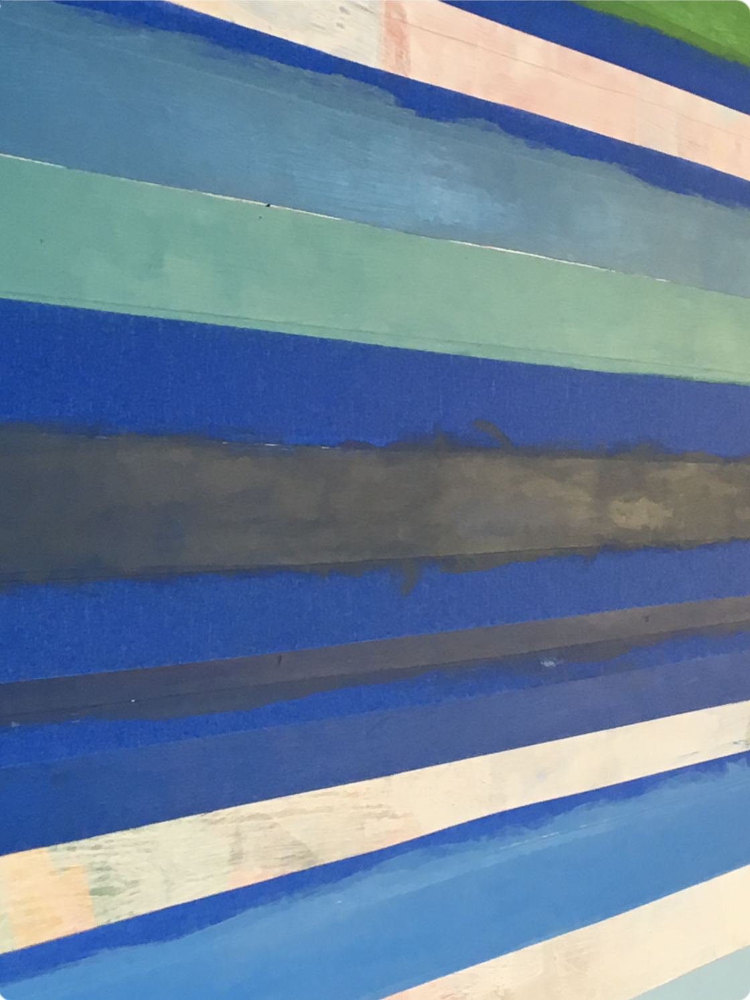

Table Painting

Medium: Acrylic on Wood
This was our final stage in the mixing of our colors. After having successfully replicated our colors, we had to make enough of that color to paint a 2-inch thick strip across the art table. Every single person did this, and people were placed in strategic locations based on their colors. The resulting image was a table striped with forty different shades of color. This was an aesthetically pleasing image, and it was also a really fun experience to repaint the table which we had used for almost three years now. This made me feel as though the impression of this year's students would be on the art table for the next few years.